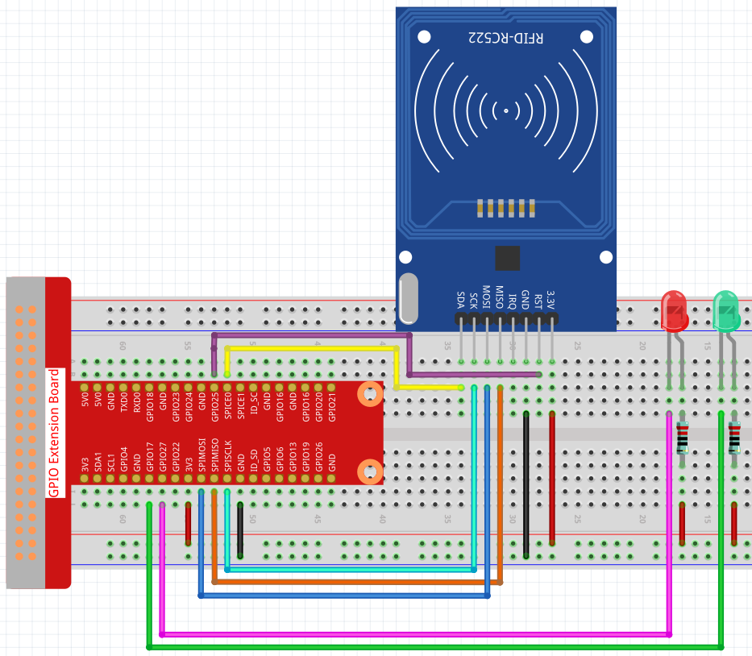
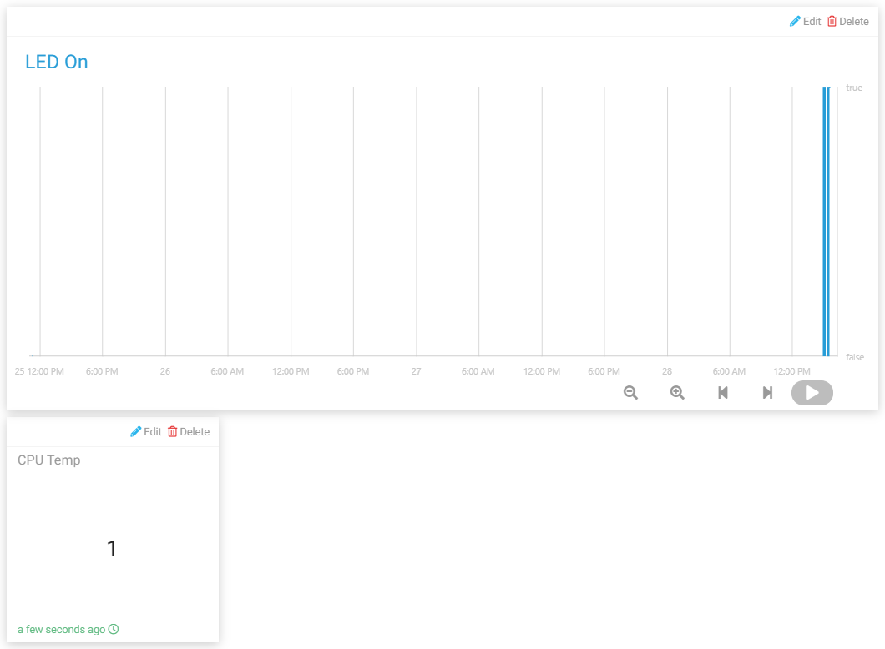

Attendance system¶
In this project, we use MFRC522 RFID Module and Cloud4RPi to make a system, you can view the attendance information on Cloud4RPi, or open the local .csv file to view the attendance records.
Due to the delay of network data transmission, the project only allows you to punch in when the green LED is on and upload data when the red LED is on.
Experimental Procedures¶
Build the circuit.
Open the code.
cd /home/pi/cloud4rpi-raspberrypi-python
sudo nano attendance_system.py
Find the line below and fill in the correct device token.
DEVICE_TOKEN = '__YOUR_DEVICE_TOKEN__'
Run the code.
sudo python3 attendance_system.py
Go to Cloud4RPi, add a new control panel named project5 and add 2 widgets (text and chart widgets) via the Add widget button.
Once added, you can view the clock-in records for different time periods on the Chart widget (when the value of LED ON is True, it means someone clocked in), and then view the number of people who clocked in on the Text widget.
Also you can find the .csv file with the date under the path /home/pi/cloud4rpi-raspberrypi-python.

Open it with the following command.
sudo nano attendance_sheet.2021.06.28.csv
In this way, you can read the punch-in records of different time periods. On the left is the ID of different MFRC522 RFID modules, and on the right is the time of punching in.

Note
If the person’s name is written to the MFRC522 RFID Module in advance, and then the id is replaced with text in the code (which will be mentioned later in the code explanation), so that the attendance sheet records the name of each person, rather than the ID of the card.
Code Explanation¶
RedPin = 13
GreenPin = 11
GPIO.setmode(GPIO.BOARD)
GPIO.setup(RedPin, GPIO.OUT, initial=GPIO.HIGH)
GPIO.setup(GreenPin, GPIO.OUT, initial=GPIO.HIGH)
Set 2 LEDs as output and set the initial value to high.
def get_time():
time.time()
year = str(time.strftime('%Y',time.localtime(time.time())))
month = str(time.strftime('%m',time.localtime(time.time())))
day = str(time.strftime('%d',time.localtime(time.time())))
hour = str(time.strftime('%H',time.localtime(time.time())))
minute = str(time.strftime('%M',time.localtime(time.time())))
second = str(time.strftime('%S',time.localtime(time.time())))
present_time = year + '.' + month + '.' + day + '.' + hour + '.' + minute + '.' + second
present_date = year + '.' + month + '.' + day
return present_date, present_time
Use the get_time() function to get the current timestamp and return two values. Where present_date is accurate to the day and present_time is accurate to the second.
attendance = False
GPIO.output(GreenPin, GPIO.LOW)
GPIO.output(RedPin, GPIO.HIGH)
print("Reading...Please place the card...")
id, text = reader.read()
print("ID: %s\nText: %s" % (id,text))
GPIO.output(RedPin, GPIO.LOW)
GPIO.output(GreenPin, GPIO.HIGH)
First, we set attendance to False, which means that no one is clocked in.
Then set GreenPin to low level to light it, and RedPin to high level to keep it off, indicating that the current attendance system is working normally.
When someone punches in, the id and text information of the card will be printed. If the red LED is on and the green LED is off, it means that the check-in is successful and the result is sent to Cloud4RPi.
During this period, the attendance system is in sleep state until the next cycle starts (the green light is on).
if not id in attendance_list:
attendance = True
attendance_list.append(id)
present_date, present_time = get_time()
attendance_statistics[id] = present_time
with open('attendance_sheet.' + present_date + '.csv', 'w') as f:
[f.write('{0} {1}\n'.format(key, value)) for key, value in attendance_statistics.items()]
First determine if the id is duplicated in attendance_list by an if statement, if not, it means the punch-in is valid and pass the id information into attendance_list. Then we get the current timestamp and use the id as the key of the attendance_statistics dictionary and present_time as the value of the corresponding key. In this way, the attendance_statistics dictionary stores the punch time of the current id.
Finally we write the attendance_statistics dictionary to a .csv file and name the file as 'attendance_sheet.'' + present_date + '.csv', so that we store the attendance sheet in time order.
Note
If you have written the person’s name in the MFRC522 RFID, then replace the id with text and your attendance sheet will record the name of the person.
def get_num():
return len(attendance_list)
Returns the length of attendance_list, i.e. the number of attendees.